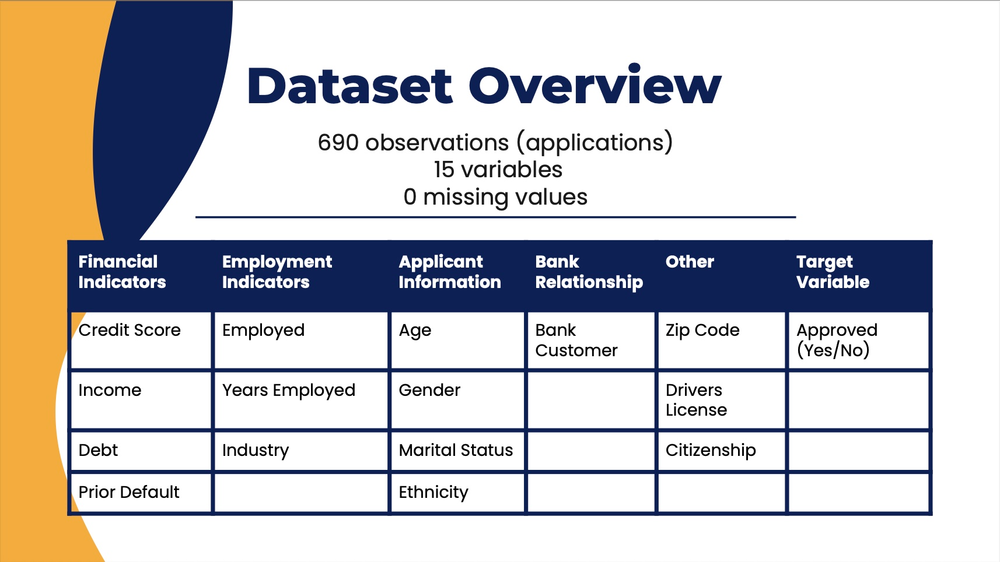
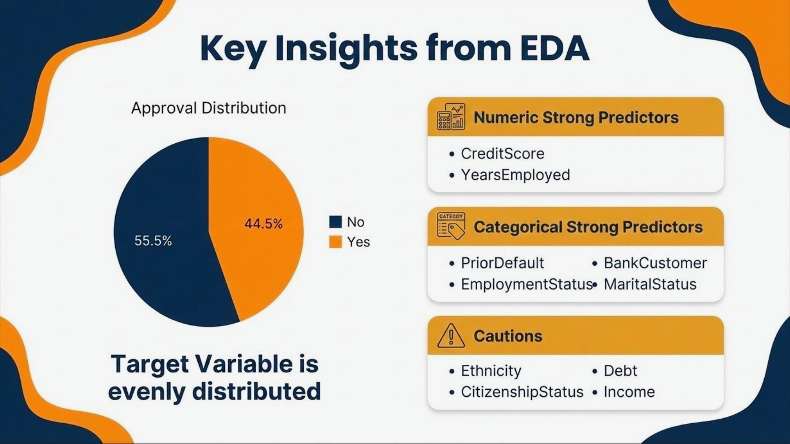
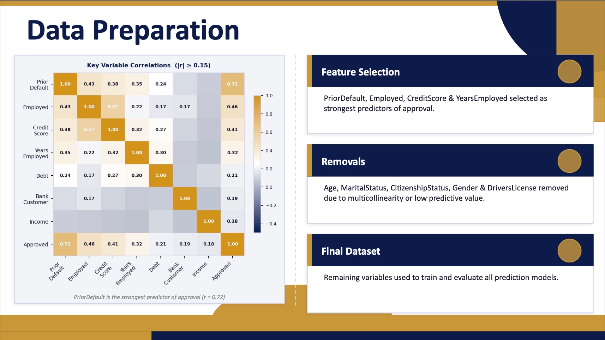
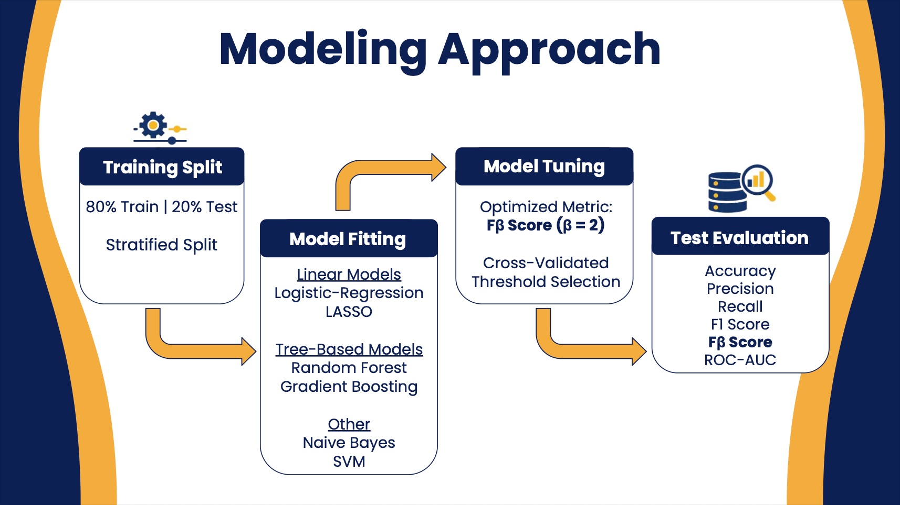
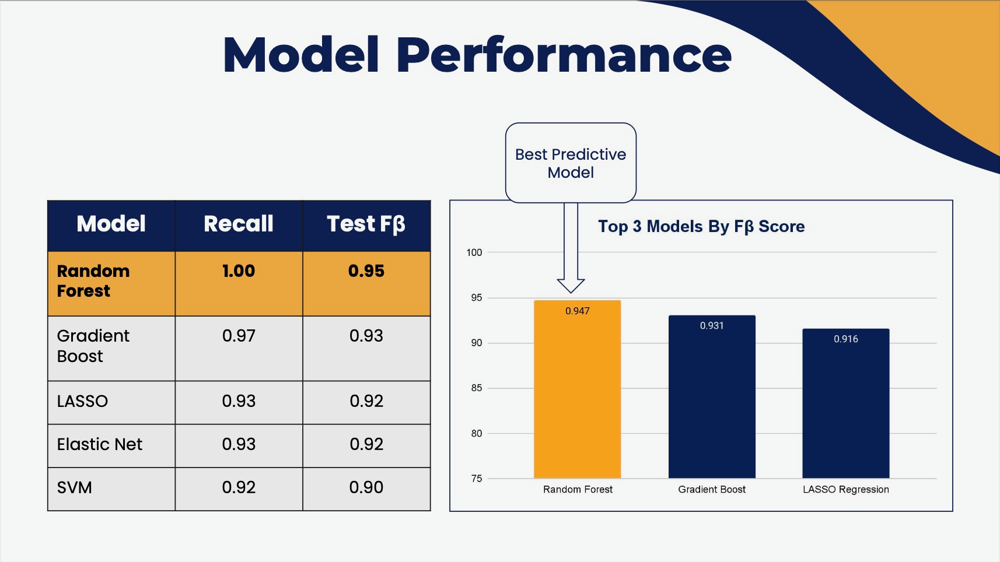
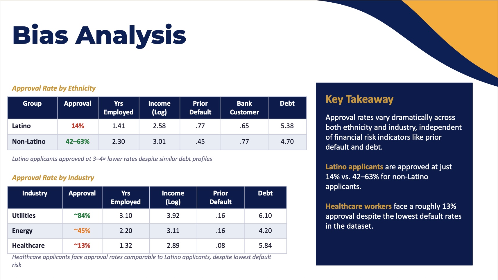

Machine Learning Case Study
Built a predictive analytics workflow to identify what drives credit card approval, compare model performance, and translate applicant data into business-ready lending insights.
Business Problem
Credit approval decisions affect both customer access and financial risk. Banks need to approve qualified applicants while avoiding unnecessary exposure from applicants who may be more likely to default.
This project evaluated whether applicant financial characteristics, employment history, bank relationship, and credit behavior could predict credit card approval outcomes. The goal was not only to build an accurate model, but also to understand which variables actually explained approval decisions.
Dataset
Credit card applications analyzed.
Applicant variables reviewed across financial, employment, demographic, and bank relationship categories.
Missing values after data review.
Approval rate, creating a manageable class balance for modeling.
Data Analysis
Approval outcomes were fairly balanced, with 44.5% approved and 55.5% denied. This meant the model could learn both classes without heavy resampling.
Income and debt showed skewed distributions, so transformations were considered to reduce the impact of extreme values.
Correlation analysis identified prior default, employment status, credit score, and years employed as the strongest approval signals.
Age, marital status, citizenship status, gender, and driver’s license status were removed due to multicollinearity, redundancy, or low predictive value.
Key Findings
Prior default history had the strongest relationship with approval outcomes, making it the clearest risk indicator.
Employment status showed meaningful predictive value, suggesting that employment stability mattered in approval decisions.
Credit score was a strong financial predictor and helped separate approved and denied applicants.
Prior Default, Employed, Credit Score, and Years Employed were selected as the strongest model inputs.
Slide Deck Examples






Modeling
The dataset was split into 80% training and 20% testing using a stratified split. Multiple classification models were evaluated, including Logistic Regression, LASSO, Random Forest, Gradient Boosting, Naive Bayes, and Support Vector Machines.
Because the goal was to reduce missed approvals, the models were optimized using the Fβ score with β = 2. This placed greater emphasis on recall while still accounting for overall predictive quality.
Model Results
Random Forest achieved the highest test Fβ score.
Random Forest achieved perfect recall on the test set.
Gradient Boosting delivered the second-best Fβ score.
LASSO provided strong performance with better interpretability.
The final recommendation was to use Random Forest as the best predictive model because it captured nonlinear relationships and minimized missed approvals. LASSO Regression was recommended as a complementary interpretable model because it made the key drivers easier to explain to business stakeholders.
Business Insights
Higher credit score, higher income, employment status, years employed, existing bank customer status, and debt-credit interactions were associated with stronger approval likelihood.
Prior default history was the strongest negative predictor, reinforcing the importance of historical credit behavior in approval decisions.
Random Forest produced the strongest predictive performance, while LASSO offered clearer coefficient-level interpretation.
Approval rates varied across ethnicity and industry groups, showing the importance of monitoring model outputs for potential bias.
Bias Analysis
The project also examined approval differences across demographic and industry groups. Latino applicants showed a 14% approval rate compared with 42% to 63% for non-Latino applicants, despite similar debt profiles.
Healthcare applicants showed an approval rate of roughly 13% despite having the lowest prior default risk in the dataset. These patterns showed that strong model performance should be paired with fairness monitoring and business review before deployment.
Conclusion
Best option when the priority is predictive performance and minimizing missed approvals.
Best option when stakeholders need clearer explanations of approval drivers.
Credit score, prior default, employment status, income, and years employed were more useful than most demographic variables.
Approval differences across demographic and industry groups should be reviewed before model deployment.
Tools Used